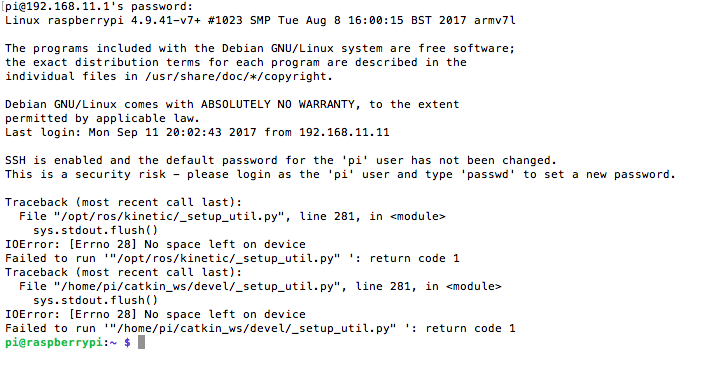
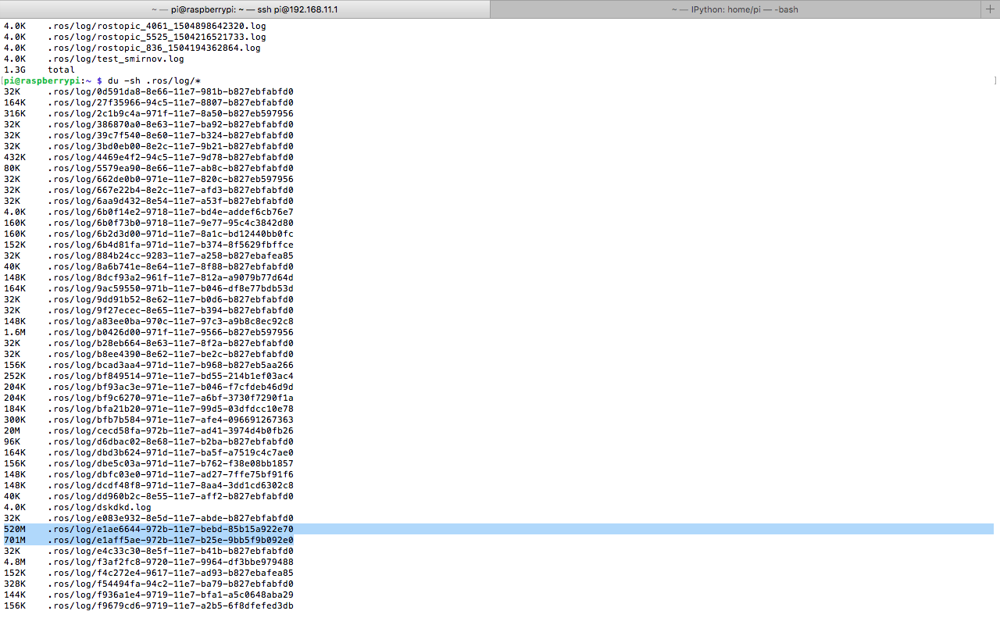

Programming, electronics, lifestyle
Проблема связана с отсутствием встроенной ротации логов в ROS. Очевидно из этого следует то, что периодически будет возникать переполнение диска:

В ROS есть стандартная утилита для мониторинга и чистки логов – rosclean. Однако она удаляет абсолютно всё (обсуждение здесь).
Осложняется проблема тем, что ROS сам бьёт все по папкам, что затрудняет сделать ротацию по некоторому файлу.

Пример одной из директорий с файлами логов cecd58fa-972b-11e7-ad41-3974d4b0fb26.
Простой и достаточно топорный скрипт для удаления всех логов, если их размер превышает 300 МБ
#! /usr/bin/env bash
if [[ $(du -s .ros | awk '{ print $1 }') -ge 300000 ]]; then
yes | rosclean purge;
echo "ros logs were cleaned up";
fi
Другие источники: